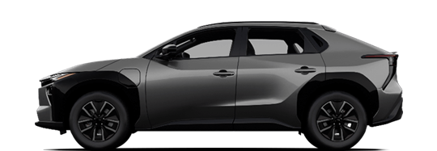

試算結果｜能源費
換車後一年可省的能源費
NT$25,854
依年里程 15,000 km，能源費約降低 70.6%。
五年能源費差額NT$129,269
這裡比較目前車輛的能源費與 bZ4X 的充電費。五年差額按相同條件估算，尚未計入購車價差、折舊、保險、充電設備及額外固定費用。
選擇你目前的車款，看看換開 bZ4X 後的馬力差異，以及一年油費與電費的差額。再依你的充電條件與用車習慣，評估是否適合換車。

Toyota 台灣官方車圖已整理 9 個品牌、158 種車款，依車系與配備等級分別列出。選好品牌與車款後，即可帶入已收錄的馬力和油耗。預設顯示汽油、油電與輕油電車；其他動力可切換篩選查看。
資料整理日期：2026/10/05，來源為各品牌台灣官網與官方型錄。車款涵蓋不同年式與等級，請核對是否符合你的車輛；未取得的數值會留白。試算時可改填實際油耗，使用油種則請依車主手冊確認。
依年里程 15,000 km，能源費約降低 70.6%。
這裡比較目前車輛的能源費與 bZ4X 的充電費。五年差額按相同條件估算，尚未計入購車價差、折舊、保險、充電設備及額外固定費用。
加權電價 4.80 元/度 · 未計充電損耗
bZ4X 最大扭力 27.4 kg-m，前輪傳動。馬力差異不直接代表加速差異，仍需考量車重、載重與路況，並透過試乘確認。
電池零件與容量維持適用不同的保證條件。年限與里程以先到者為準。
新車基本保證涵蓋動力電池組。與電池容量無關的組件問題，依基本保證條件處理。
保證期間內，動力電池容量維持至少 70%。容量由原廠檢測，符合保證條件時，維修或更換方式依原廠判定。
目前收錄的官方資料未公布整組電池更換價格。可向經銷商索取含零件與工資的報價，並確認哪些費用適用保證。
除了馬力與費用，也把停車、充電和常走的路線一起考慮。
先確認停車位可否裝充電設備、安裝費用與常用充電站。bZ4X 充電接頭：直流快充 CCS1、交流充電 SAE J1772。
743 km 是 NEDC 測試值，實際續航會受天候、載重、空調與駕駛習慣影響。長途請規劃充電並保留餘量。
官方規配列有後廂 110V 供電。使用前請核對功率、適用電器與手冊限制，勿直接以電池容量推算整夜供電。
另比較購車價差、充電設備、保養、保險、稅費與折舊。純電車仍需定保，官方建議每半年／1 萬公里，先到者為準。